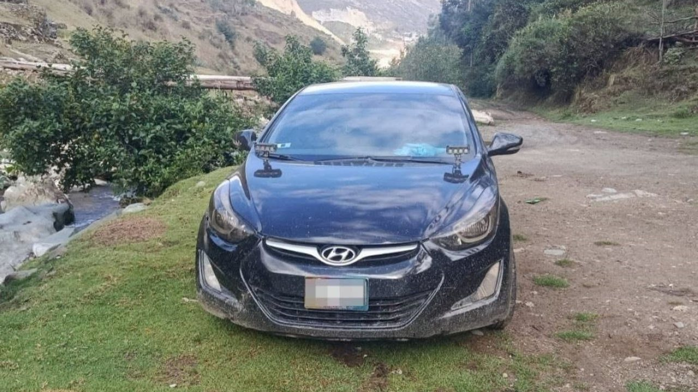

Piura: Realizan campaña “Niños con derechos, no con cargas” El Ministerio Público desarrollaron talleres de sensibilización dirigidos a escolares del primer año de secundaria de nueve instituciones educativas. Campaña para prevenir la mendicidad y erradicar el trabajo infantil.





Piura: Realizan campaña “Niños con derechos, no con cargas” El Ministerio Público desarrollaron talleres de sensibilización dirigidos a escolares del primer año de secundaria de nueve instituciones educativas. Campaña para prevenir la mendicidad y erradicar el trabajo infantil.
Los Hermanos Yaipén anunciaron la postergación de su concierto por sus 26 años de trayectoria musical, debido al estado de salud de su fundador Walter Yaipén, quien sufrió una descompensación durante una de sus recientes presentaciones.
La ciudad de Piura alcanzó los 37 grados el último sábado El Senamhi prevé el incremento de las temperaturas desde hoy Altas temperaturas en Piura. La ciudad de Piura registró 37 grados el último sábado, consolidándose como una de las temperaturas más altas del mes de noviembre.
En Tumbes, se registraron lluvias intensas durante las últimas 24 horas. La ‘U’ se juega una de sus últimas oportunidades para conquistar el Torneo Clausura 2026, pero tendrá que superar al líder en condición de visita.
Zoológico de Huancayo se administraba con plan de manejo vigentes desde hace 17 años Zoológico de Huancayo elabora nuevo Plan de Manejo que establece protocolos de alimentación, salud y capacidad de atención para las especies, además de proyectar la ampliación del recinto.
Así cerró el tipo de cambio este 13 de diciembre Mira los valores de compra y venta de dólares en casas de cambio online y mercado paralelo. Así está el tipo de cambio en Perú: ¿cuál es la tendencia del precio del dólar?
La Contraloría informó que diversos establecimientos de salud de Tumbes carecen de pruebas rápidas para diagnosticar el dengue, además de otras deficiencias. En el informe, la Contraloría indica que el mencionado nosocomio regional no tiene pruebas rápidas de dengue ni reactivos.
En pleno estado de emergencia, un nuevo asesinato se registró en la provincia de Virú, región La Libertad. Esta vez, sicarios acabaron con la vida de un hombre de 35 años, quien sería familiar de un exsubprefecto, mientras se encontraba en el centro poblado de Valle de Dios, distrito de Chao.
Danny Rosales contó que vivió un momento especial al acudir al cine con su hijo para ver su participación en ‘La gran sangre: Ojo x ojo’. Danny Rosales forma parte de la cinta de acción protagonizada por Aldo Miyashiro y Carlos Alcántara, que reunió a más de treinta mil espectadores en su estreno.
Cada edición dura menos de dos minutos. En la web tienes el resumen de cada historia y el enlace directo al medio original para leerla completa.
Conoce Olfatecho →